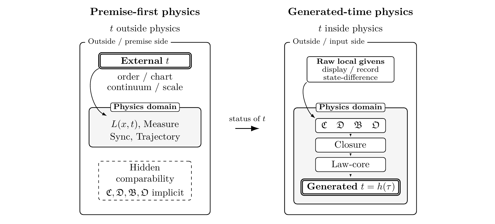

English translation of the Japanese original
Moving the Time Variable from a Premise of Physical Law to a Consequence: A General Theory of the Complete Description of Time Establishment through Local Comparison and Failure Classification
Read the main paper PDF · Supplement, figures, and verification assets
Explore LCTR
Explore the main contributions, from the definition of physical time to the conditions for reusing existing results.
- Time: from a premise of law to a consequence of generation
- A constructive definition of time: answering Feynman’s question
- Computer-science design principles as a mathematical structure for physical time
- An operational guarantee for continuity and differentiation
- Two-stage misrecognition in time stretching, and a third stage in biological application
- Auditing the unbounded inheritance of limited results through evidence-effect domains
- Re-grounding while preserving existing results
- Auditing 72 sources by the same criterion
- Generating time eliminates mysteries that depend on ungenerated time
Abstract
The local-comparison theory of time reference (LCTR) transfers the time variable appearing in physical laws from a primitive premise of law description to a representation that can be used after its physical grounds have been generated within the theory. What this paper changes is the order of presupposition governing how theoretical physics states its laws: before a time variable is entered into a law, its grounds and qualification for use must be constructed.
Its theoretical structure integrates the design principles of computer science concerning types, dependencies, states, and change effects as a mathematical structure that specifies the generation of physical time, qualification for use, invalidation localization, and downstream regeneration.
The construction begins by retaining, as records, local differences in indications and states arising in apparatuses and objects, and by determining, without temporal quantities, where the information required for comparison is joined. It then proceeds through the integration and ordering of comparison results and through dynamical description and time representation to the construction of a time variable usable within laws. It also specifies the respective establishment conditions for the validity domain of continuous approximation and for differential form. A time variable may be used only when the establishment conditions along the generation dependencies leading to that use are satisfied. Through this generation, LCTR successively gives the establishment conditions for the identity of time content, before-and-after relations, comparability and incomparability, linear order, and real-valued representation, and separates the establishment of time structure from the choice of time coordinates. This construction gives a constructive definition of physical time in terms of its establishment conditions rather than its verbal meaning.
If a condition of the generation process is not satisfied, the audit identifies the conditions that first fail along the generation dependencies and localizes nonestablishment to the corresponding positions. It then returns the validity domain of the time variable, the set of first invalidation positions, boundary information for the approximation scale, the causes of invalidation, and the structural burden. For continuous approximation and differential forms, it thereby presents, along a single dependence order, the range in which they may be used, where and why they cease to be valid, and the objects to be repaired and regenerated or recomputed. The audit thus supplies continuous approximation and differentiation with a conditional operational warranty that states their conditions of use and causes of invalidation. LCTR changes the status of classical continuous time from a primitive premise of law description to a generated approximate representation with physical establishment conditions and a maximal domain of validity.
The audit covers both formal theoretical conditions and conditions of physical realization. It keeps theoretical and engineering conditions distinct in type while connecting physical carriers, records, communication, finite resolution, and evidence provenance within a single audit dependence, and includes presentation of physical realization and the available range of use among the obligations for establishing a theory. Qualification to describe multiple objects on a common time representation and to use simultaneity judgments, synchronization, and a common time representation is obtained on the domain where each object’s physical carriers, records, information coupling, communication, and multi-object relations are established; remote or global constructions additionally require consistency conditions for transport and gluing.
Primitive-time input is defined here as entering time content into law operations or result derivations while lacking a complete generation path that establishes that content from nontemporal physical inputs. Mathematical consistency, predictive performance, and empirical fit do not supply the generation path missing from primitive-time input. The evidence-effect domain is defined as the range directly supported by successful measurement, prediction, model fit, or computation. A claim that transfers a result to another object, predicate, evidence type, condition of establishment, or application domain exceeds that evidence-effect domain.
Under this criterion, 72 representative sources spanning theories, experiments, metrological standards, and engineering from antiquity to the present were audited. Every source contained primitive-time input and results dependent on it. No source generated from nontemporal physical inputs the entirety of the time content it used. Even sources possessing physical relations corresponding to part of the generation process did not reach generation of all the time content they used; primitive-time input and results dependent on it remained. This unanimity shows that primitive-time input is not confined to a particular period or field but has recurred throughout the history of physics.
Current theoretical descriptions containing primitive-time input do not satisfy physical-time qualification. Modern physics, with its present use of time variables unchanged, is therefore not established. When primitive-time input backgrounds a condition required for use, and independent evidence establishes both actual invalidation of that same condition and downstream dependence reaching a result, the result itself loses qualification for use in the evaluation domain and requires regeneration or recomputation after repair. Existing mathematical, experimental, and engineering results and physical relations, by contrast, are retained within their evidence-effect domains and can be reused safely where time content and its grounds have been generated and their validity domains and invalidation positions audited. For quantities that contain a time dimension or are defined using time, retention of physical relations is separated from qualification for use of time-dependent expressions, and the latter is determined within the post-generation validity domain.
Result-preserving re-grounding, which integrates invalidation of qualification under primitive-time premises, retention of existing results, and their safe reuse, distinguishes removal of external time from generation of physical time as separate obligations. It generates time usable within laws from records, comparisons, differences in object states, and observer-side information coupling. Generation of time order and construction of causal order are separate obligations: establishing causal order does not entail the establishment of a clock scale, time intervals, or law time. This generation order places periods, frequencies, and Hz among post-generation metrological results, identifies the objects on which Lorentz transformations act as generated time representations and spatial displays, and separates local proper time and global law time into distinct stages of establishment. It reformulates the problem of time in quantum gravity as a problem of qualification for the use of law time, specifies the arrow of time as a subsequent orientation condition on generated time representations, and imposes on claims of the creation, emergence, recovery, or nonexistence of time the obligation to prove a generation path or alternative structure and the exclusion of primitive-time dependence from all time content and subsequent results. Along that generation dependence, it places problems conventionally discussed as separate problems of time at distinct invalidation positions. Classical physics, relativity, metrology and engineering, quantum gravity, and cosmology can thereby be compared along the common axes of the burdens required to establish time, validity domains, and invalidation positions.
When formal evidence and statement evidence are collated along these common axes, the time-stretching account in relativity exhibits a two-stage misrecognition. The first stage places time whose physical grounds have not been generated in advance of laws as “time itself,” independent of physical carriers such as clocks, oscillators, signals, and records. The second attributes comparison differences on physical carriers responding to gravity or motion to stretching of that “time itself.” If statements asserting the nonexistence of time and statements attributing properties to time itself are placed within the same explanatory system, the two are incompatible when they target the same time-content type and application domain; when they target different objects or domains, the transition must be stated. A transition to clock-indication differences, clock-rate differences, proper-time differences, coordinate differences, or other relational quantities does not entail a change in an attribute of “time itself” independent of physical carriers. A further chain that transfers the time attribute to living processes and extends the force of experimental results concerning physical carriers to direct demonstration of living processes constitutes a three-stage misrecognition involving biological application. More generally, the same kind of transgression recurs across multiple fields when the success of a limited computation, prediction, model fit, or experiment is transferred to the physical establishment of an entire mathematical expression, the qualification of ungenerated time, application to an unmeasured target, or an ontological claim about time. This paper identifies that pattern as the unbounded inheritance of limited results. The force of a result is restricted to the object, predicate, evidence type, condition of establishment, and application domain that the result directly supports.
Consider those problems treated by modern physics as independent mysteries concerning time whose constitutive conditions depend on ungenerated time. Once generated physical relations are distinguished from the attribution of properties to an ungenerated “time itself,” and time is physically generated, that constitutive condition is removed. Every such mystery consequently loses its grounds as an independent problem and disappears. What remains is to determine the conditions of establishment, validity domain, first invalidation positions, failure classification, repair order, and next evidence to be acquired for generated time representations. To use a time variable in a physical law, its time content and physical grounds must be generated before its use in the law. A time variable in a physical law is not established as a primitive premise.
LCTR in figures


Audit of 72 sources
The audit covers 72 sources spanning theories, experiments, metrological standards, and engineering from antiquity to the present. Primitive-time input remains in all 72; none generates all of the time content it uses from nontemporal physical inputs.
Verification assets
The accompanying lctr-verification.zip provides formalizations of the mathematical constructions in Chapters 2–6 in Lean 4 with Mathlib and in Isabelle/HOL, together with correspondence to the Japanese and English text, verification results, and reproduction instructions. Lean proofs are exported with lean4export and independently rechecked by nanoda and con-leche.
Auxiliary checks use cvc5 and Z3 for SMT solving, Carcara for proof-trace checking, SymPy and Maxima for symbolic computation, Pint and Astropy for unit and dimensional checks, and MMT for type checking. Expression structures are also compared between OpenMath and Content MathML representations.
For Chapters 7 and 8 and the supplement, the archive includes a checker that recomputes local reachability, generation upper bounds, structural signatures, and counts from the accompanying audit dataset for the 72 sources.
Keywords
Core concepts
- LCTR
- time generation
- primitive-time input
- result-preserving re-grounding
- time reference
- local comparison
- time reconstruction
- generation dependence
- validity domain
- failure classification
Physics
- foundations of physics
- classical mechanics
- electrodynamics
- special relativity
- general relativity
- quantum mechanics
- quantum field theory
- quantum gravity
- cosmology
- thermodynamics
- statistical mechanics
- time and frequency metrology
- atomic clocks
- clock synchronization
- Global Positioning System
- proper time
- coordinate time
- Lorentz transformations
- time dilation
- gravitational redshift
- Sagnac effect
- causal order
- arrow of time
- entropy
- quantum measurement
- decoherence
- quantum entanglement
- relational time
- thermal time
- black hole thermodynamics
- Hawking radiation
- black hole information problem
- holographic duality
- emergent spacetime
- cosmological constant problem
- dark energy
- cosmic expansion
- relativity and biological processes
Computer science
- computer science
- type systems
- formal methods
- dependency analysis
- change impact analysis
- invalidation localization
- modular architecture
- machine-checked proofs
- independent verification
Mathematics
- mathematical logic
- set theory
- relational structures
- order theory
- equivalence relations
- quotient structures
- order embeddings
- lattice theory
- order topology
- real-valued representations
- differential calculus
- directed acyclic graphs
- directed hypergraphs
- generation closure
- local-to-global gluing
Evidence and auditing
- scientific evidence
- evidence evaluation
- evidence-effect domain
- evidence provenance
- proof obligations
- unbounded inheritance of limited results
Verification tools and formats
- Lean 4
- Isabelle/HOL
- Mathlib
- lean4export
- nanoda
- con-leche
- cvc5
- Z3
- Carcara
- SymPy
- Maxima
- Pint
- Astropy
- MMT
- OpenMath
- Content MathML
- OMDoc
- LF
- Alethe
- SMT-LIB
- libxml2 (xmllint)
- libxslt (xsltproc)
Publication and materials
v1.0 · Zenodo
The Japanese original and English translation are provided below. The PDFs and verification ZIP are available from Zenodo.
| Material | Japanese original | English translation |
|---|---|---|
| Main paper + supplement | PDF6.7 MB | PDF6.3 MB |
| Main paper | PDF4.1 MB | PDF3.3 MB |
| Supplement | PDF5.4 MB | PDF4.9 MB |
| Figure collection | PDF0.9 MB | PDF0.4 MB |
Verification assets
lctr-verification.zip 52.0 MB
Browse the verification assets on GitHub · MMT formalization namespace
PDFs, documentation, and audit data: CC BY-NC-ND 4.0. Verification code: BSD-3-Clause. Bundled third-party code retains its original license.